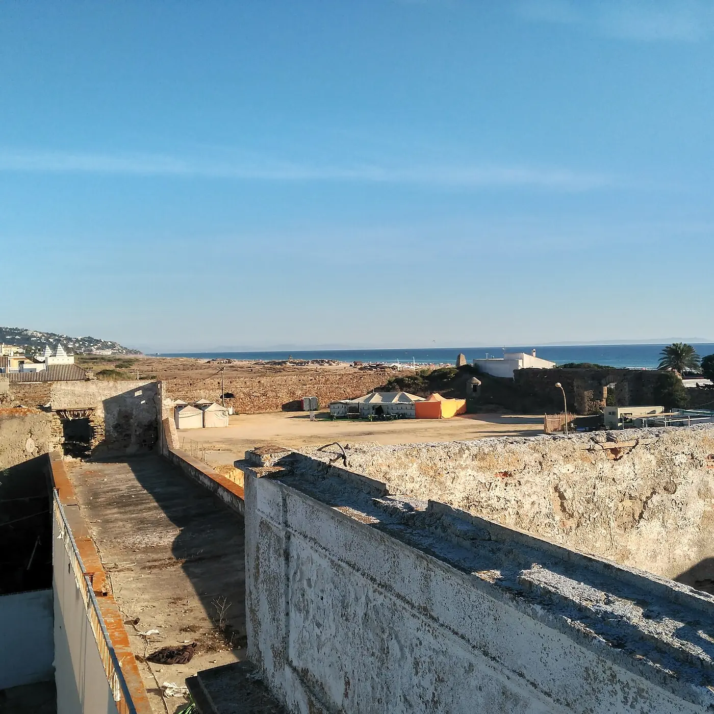
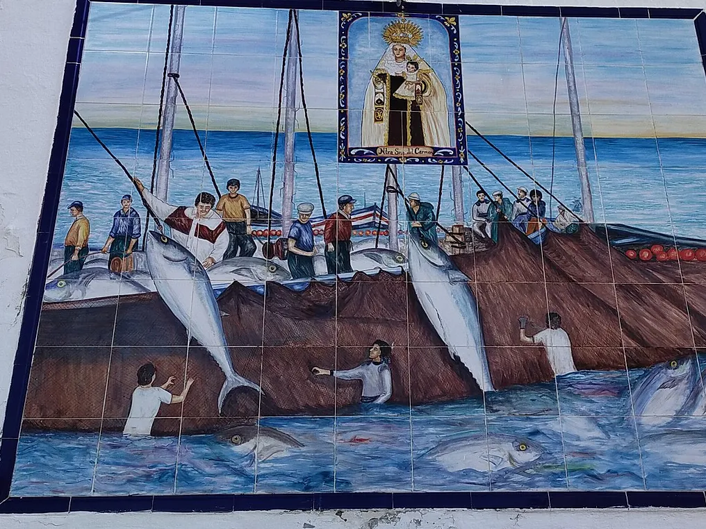
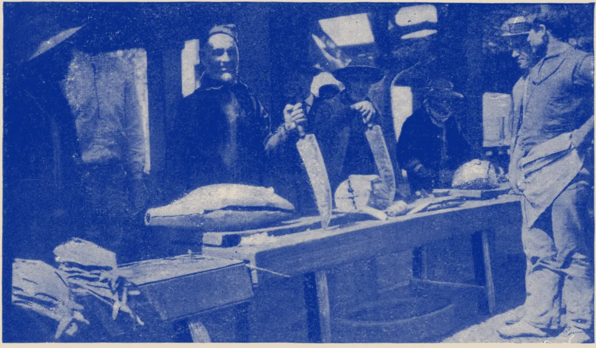
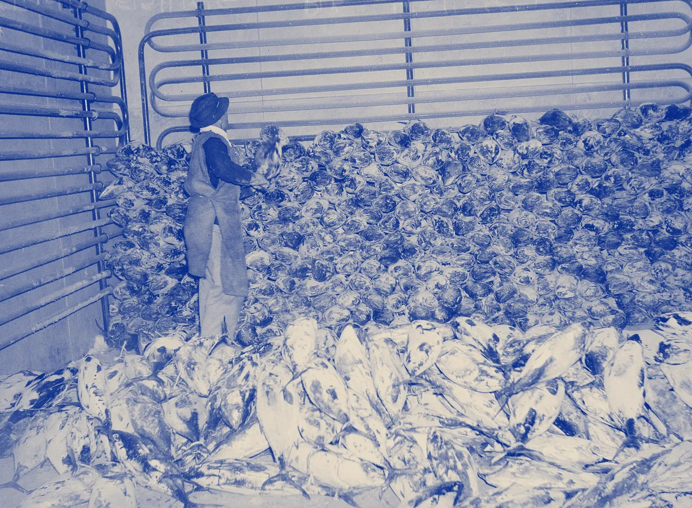

Atalayero
Atún de almadraba, en lata de Zahara
Atún rojo pescado en mayo frente a Zahara de los Atunes, cocido y enlatado a mano en aceite de oliva. Una sola temporada al año.
Montar mi cajaUna sola temporada
El atún rojo cruza el Estrecho en mayo camino del Mediterráneo. Lo esperamos con la almadraba calada desde abril y no enlatamos nada fuera de esas seis semanas.
- 1934
- Antonio, el atalayero, baja de la torre y abre la fábrica
- 6 semanas
- De primeros de mayo a mediados de junio
- 48 horas
- Del copo a la lata, con el atún entero
- 11 meses
- En aceite antes de salir a la venta
El nombre viene del oficio del bisabuelo: era el atalayero, el vigía que desde la torre de la playa avisaba a las barcas cuando entraba el atún. Hoy esa torre es el dibujo de cada etiqueta.

Cada pieza, su lata
Ventresca · lata de 120 g · 14,90 €
La barriga del atún, la parte más grasa. Se abre en láminas que se deshacen; pan, tomate y nada más.
Del copo a la lata
Lo que pasa entre el alba en que se levanta la red y el día en que la lata llega a tu casa. Lo hacemos igual desde 1934; solo ha cambiado la cocina.

Tarifa
